Bayesian Optimisation from Scratch in R
Bayesian optimisation is a powerful technique for optimising expensive functions or processes. In many applications, such as drug discovery, manufacturing, machine learning, or scientific experimentation, the function or process to be optimised may be time consuming or costly to evaluate. Bayesian optimisation provides a framework for sequential experimentation and for finding optima with as few evaluations as possible.
This post seeks to introduce the core ideas and components of Bayesian optimisation. Along with the introduction are implementations of all the core components of Bayesian optimisation in R. The implementations only use base R and Tidyverse - they are designed to be simple and not necessarily efficient.
library(ggplot2)
library(magrittr)
set.seed(4444)The core idea behind Bayesian optimisation is to use a surrogate model to approximate a true objective function or process, and then use this approximation to determine the next experiment to perform. Typically, Gaussian processes or other similar probabilistic models are used as surrogate models.
The surrogate model is initialised with a few points and an acquisition function is then used to determine the next point to evaluate. The acquisition function balances exploration, ie. searching the regions of covariate space where the uncertainty is high, and exploitation ie. searching the regions where the surrogate model predicts a high value.
After the next point is evaluated, it is added to the existing data and the surrogate model is updated. The process of selecting the next point to evaluate and updating the surrogate model is repeated until a stopping criterion is met. This could be when subsequent experiments stop yielding significantly different or better results. In real-world applications, a budget might only allow for limited number of experiments.
Bayesian optimisation has several advantages over other optimisation methods, including its ability to handle expensive functions and processes with a small number of evaluations. It also performs well in cases with noisy or uncertain data. However, while it can be considered a machine learning model, the surrogate model obtained through Bayesian optimisation is not a universally good approximation of the objective function and is not necessarily suitable for cases where extensive inference or interpretation is needed.
Core Components of Bayesian Optimisation
There are five main components to Bayesian optimisation
Objective Function
The objective function is the function or process that needs to be optimised, but which is expensive or time consuming to evaluate. The objective function is typically a black box, meaning that its mathematical form is unknown, and only its inputs and outputs can be observed.
Surrogate Model
The surrogate is a regression model that is used to approximate the objective function. The most commonly used surrogate model in Bayesian optimisation is a Gaussian process, which is a flexible, non-parametric model that can capture complex, non-linear relationships between the inputs and outputs of the objective function.
Acquisition Function
The acquisition function is used to determine the next point to evaluate in the search space. The acquisition function balances exploration and exploitation.
Initial Training Data
Bayesian optimisation requires some initial data to construct the surrogate model. This data can be obtained by evaluating the objective function at a few points in the search space. Given that the total experiment budget is often limited, much consideration often goes into deciding these initial training points.
Stopping Criterion
Bayesian optimisation might require a stopping criterion to determine when to stop the search. This could be some measure of convergence, but often the number of experiments or deadlines set the constraints.
In the following sections, each component is discussed in greater detail, accompanied by implementations in R.
Objective Function
Bayesian optimisation can be applied to optimise any function or process that can be thought of as a black box function, f, that takes as input a set of covariates, \mathbf{x}, and returns a scalar, y. Sometimes the actual readings from such function are noisy, i.e.
y = f(\mathbf{x}) + \epsilon
where \epsilon is the noise, often assumed to be Gaussian \epsilon \sim \mathcal{N}(0, \sigma_{\epsilon}^2).
Some common examples of real world objective functions include
ML Hyperparameters. Machine learning model hyperparameters such as learning rate or regularisation strength are expensive to optimise, since they require retraining the model for each iteration. In the context of Bayesian optimisation, the model hyperparameters would be the input \mathbf{x} and the model output would be the scalar objective y.
Design of experiments. Optimising the parameters of chemical or biological experiments can save both time and money, or even accelerate the discovery of new drugs or products.
Manufacturing. A manufacturing process can often be thought of as have a set of defined inputs (material, flow, settings, etc.) and measurable outputs that should be maximised (eg. product output or yield) or minimised (eg. waste).
Benchmarking Functions
This implementation of Bayesian optimisation mainly explores each component at a high level so there will not be an actual black box process to optimise. Instead, a benchmark function is used to demonstrate the implementation.
There are many good benchmark functions. One such is the Ackley function. It is defined as:
f(\mathbf{x}) = -a\exp\left(-b\sqrt{\frac{1}{d}\sum_{i=1}^dx_i^2}\right) - \exp\left(\frac{1}{d}\sum_{i=1}^d \cos(c x_i)\right) \\ + a + \exp(1)
where d is the number of dimensions and a, b, and c are constants. The global minimum of the Ackley function is f(\mathbf{x})=0 at \mathbf{x}=(0,0,...,0).
For this implementation the constants are set at a = 20, b = 0.2 and c = 2\pi, and the function can be applied to a matrix of observations, \mathbf{X}, rather than just a single vector of covariates.
ackley <- function(X) {
if (is.null(dim(X))) dim(X) <- c(1, length(X))
d <- ncol(X)
part1 <- -20*exp(-0.2*sqrt(1/d*rowSums(X^2)))
part2 <- -exp(1/d*rowSums(cos(2*pi*X)))
part1 + part2 + 20 + exp(1)
}Surrogate Model: Gaussian Process Regression
This section explores the virtues Gaussian processes and how they can be applied as surrogate models for Bayesian optimisation. This is the largest and most complex part of Bayesian optimisation, and the discussions and implementations will only take a brief glance at some of the considerations.
A Gaussian process (GP) is a probabilistic model that defines a distribution over functions. A GP model assumes that a function can be represented as a collection of random variables with a multivariate Gaussian distribution. Intuitively, the GP assumes that data points with high correlation among the covariates have similar values of the output variable(s).
Formally, a GP is defined by a mean function and a covariance function, also called a kernel function.
p(f | \mathbf{X}) = \mathcal{N}(f | \mathbf{\mu}, \mathbf{\Sigma})
f is the objective function and \mathbf{X} is a set of observations for the covariates of f. The mean function, \mathbf{\mu}, specifies the expected value of the function at each point in the covariate space, while the covariance matrix, \mathbf{\Sigma}, specifies how the function values at any two points in the covariate space are correlated. The covariance matrix is calculated using a kernel function and, in practice, the choice of kernel function is important for obtaining good and interpretable results with Bayesian optimisation. The mean function is of much lesser consequence and is often set to \mathbf{\mu} = \mathbf{0}.
Kernels
The choice of kernel function reflects prior beliefs about smoothness, periodicity, and other properties of the objective function. Intuitively, the kernel is a function that specifies the similarity between pairs of vectors of covariates. In other words, the kernel should quantify how similar two data points are, given just the input.
Formally, a kernel function k(\mathbf{x}, \mathbf{x'}) takes two input vectors \mathbf{x} and \mathbf{x'} and produces a scalar value that quantifies the similarity or covariance between the two vectors.
The kernel function can be applied to the covariates, \mathbf{X}, of a set of observed data points to create a covariance matrix, \mathbf{\Sigma}
\Sigma_{ij} = k(\mathbf{x}_i, \mathbf{x}_j)
for all combinations of observations i and j.
Kernels themselves are an entire subject, see the kernel post for a thorough discussion of kernels for Gaussian processes and Bayesian optimisation.
Implementing the RBF kernel
An example of a commonly used kernel is the Radial Basis Function (RBF) kernel. The RBF kernel is defined as
k(\mathbf{x}_i, \mathbf{x}_j) = \sigma_f^2 \exp\left(-\frac{1}{2}\frac{\lVert \mathbf{x}_i - \mathbf{x}_j\rVert^2}{l^2}\right)
where \sigma_f and l are parameters and \lVert \rVert is the euclidean distance of the two vectors.
This implementation can take two vectors or two matrices. For a vector input, it returns the kernel function value. For a matrix inputs, the covariance matrix, \mathbf{\Sigma}, is returned.
#' RBF Kernel
#'
#' @param X1 matrix of dimensions (n, d). Vectors are coerced to (1, d).
#' @param X2 matrix of dimensions (m, d). Vectors are coerced to (1, d).
#' @param l length scale
#' @param sigma_f scale parameter
#'
#' @return matrix of dimensions (n, m)
rbf_kernel <- function(X1, X2, l = 1.0, sigma_f = 1.0) {
if (is.null(dim(X1))) dim(X1) <- c(1, length(X1))
if (is.null(dim(X2))) dim(X2) <- c(1, length(X2))
sqdist <- (- 2*(X1 %*% t(X2))) %>%
add(rowSums(X1**2, dims = 1)) %>%
sweep(2, rowSums(X2**2, dims = 1), `+`)
sigma_f**2 * exp(-0.5 / l**2 * sqdist)
}\sigma_f^2 is a variance parameter that simply scales the functions to the magnitude of f. More interestingly, the length scale parameter, l of the RBF kernel affects the smoothness and flexibility of the functions modelled with a GP that uses this kernel. For a small value of the length scale, the kernel results in very flexible functions, whereas a larger length scale yields very smooth functions.
tibble::tibble(l = c(0.25, 0.5, 1, 2, 5)) %>%
tidyr::expand_grid(x1 = seq(0, 10, length.out = 100)) %>%
dplyr::mutate(k = purrr::map2_dbl(x1, l, ~ rbf_kernel(.x, 0, .y))) %>%
ggplot(aes(x = x1, y = k, colour = factor(l))) +
geom_line() +
theme_minimal() +
labs(
x = "Euclidian distance of points",
y = "Covariance",
colour = "Length scale",
title = "RBF kernel"
)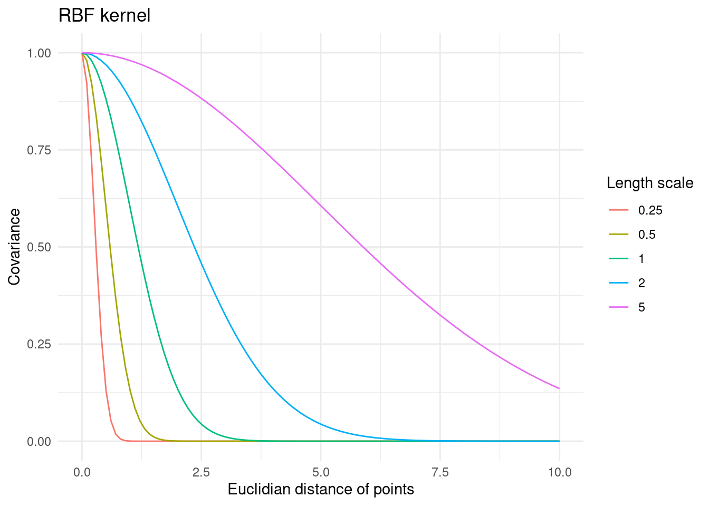
The intuition here is that for small length scales two points have to be very close to have any correlation. This results in very flexible functions that do not expect much correlation between data points. For a large length scale, however, points that are far apart are still expected to behave in a similar way. This results in very smooth functions that expect similar output values across the entire covariate space.
The RBF kernel is a popular choice for Gaussian processes in part because of this interpretability. There are other advantages to the RBF kernel, but it is not necessarily a good default choice for every problem.
Gaussian processes as a distribution over functions
If the Gaussian process is a distribution over functions, it should be possible to sample random functions from it. And indeed it is! The only thing needed in order to sample from a Gaussian is a function for pulling random numbers from, well, a Gaussian.
In practice, this amounts to plugging the mean and the covariance (kernel) into a multivariate Gaussian and sampling from it. Of course, a set of points, \mathbf{x}, is required to compute \mathbf{\Sigma}. Note, however, that no outputs, \mathbf{y} are needed yet, so a grid for \mathbf{x} will suffice.
#' Random Samples from a Multivariate Gaussian
#'
#' This implementation is similar to MASS::mvrnorm, but uses chlosky
#' decomposition instead. This should be more stable but is less efficient than
#' the MASS implementation, which recycles the eigen decomposition for the
#' sampling part.
#'
#' @param n number of samples to sample
#' @param mu the mean of each input dimension
#' @param sigma the covariance matrix
#' @param epsilon numerical tolerance added to the diagonal of the covariance
#' matrix. This is necessary for the Cholesky decomposition, in some cases.
#'
#' @return numerical vector of n samples
rmvnorm <- function(n = 1, mu, sigma, epsilon = 1e-6) {
p <- length(mu)
if(!all(dim(sigma) == c(p, p))) stop("incompatible dimensions of arguments")
ev <- eigen(sigma, symmetric = TRUE)$values
if(!all(ev >= -epsilon*abs(ev[1L]))) {
stop("The covariance matrix (sigma) is not positive definite")
}
cholesky <- chol(sigma + diag(p)*epsilon)
sample <- rnorm(p*n, 0, 1)
dim(sample) <- c(n, p)
sweep(sample %*% cholesky, 2, mu, FUN = `+`)
}To assist the visualisation, here is a plot for the mean, uncertainty, and some samples of a Gaussian process for the case where there is only one covariate, i.e. \mathbf{X} is of shape (n,1) where n is the number of observations.
gpr_plot <- function(samples,
mu,
sigma,
X_pred,
X_train = NULL,
y_train = NULL,
true_function = NULL) {
n_samples <- dim(samples)[[1]]
p <- tibble::as_tibble(
t(samples),
.name_repair = ~ paste("sample", seq(1, n_samples))
) %>%
dplyr::mutate(
x = X_pred,
uncertainty = 1.6*sqrt(diag(sigma)),
mu = mu,
lower = mu - uncertainty,
upper = mu + uncertainty,
f = if (!is.null(true_function)) true_function(X_pred)
) %>%
ggplot(aes(x = x)) +
geom_ribbon(
aes(ymin = lower, ymax = upper, fill = "89% interval"),
alpha = 0.2
) +
geom_line(aes(y = mu, colour = "Mean")) +
theme_minimal() +
labs(
y = "y",
x = "x",
colour = "",
fill = ""
) +
theme(panel.grid = element_blank())
p <- Reduce(
`+`,
init = p,
x = lapply(paste("sample", seq(1, n_samples)), function(s) {
geom_line(aes(y = .data[[s]], colour = s), linetype = 2)
})
) +
scale_colour_brewer(palette = "YlGnBu") +
scale_fill_manual(values = list("89% interval" = "#219ebc"))
if (!is.null(X_train) && !is.null(y_train)) {
p <- p +
geom_point(
data = tibble::tibble(x = X_train, y = y_train),
aes(x = x, y = y, shape = "Training point"),
colour = "#fb8500",
size = 4
) +
scale_shape_manual(values = c("Training point" = "+")) +
labs(shape = "")
}
if (!is.null(true_function)) {
p <- p +
geom_line(mapping = aes(y = f, colour = "True function"))
}
return(p)
}This bit is at the core of Gaussian processes. Given a set of points, the corresponding \mathbf{\Sigma} is calculated. Then this are plugged into a multivariate Gaussian to obtain predicted function values. In this case, \mathbf{\mu} has just been set to \mathbf{0}.
n_samples <- 5
X_predict <- matrix(seq(-5, 5, length.out = 100), 100, 1)
mu <- rep(0, times = length(X_predict))
sigma <- rbf_kernel(X_predict, X_predict, l = 1, sigma_f = 1)
samples <- rmvnorm(n = n_samples, mu, sigma)
gpr_plot(samples, mu, sigma, X_predict)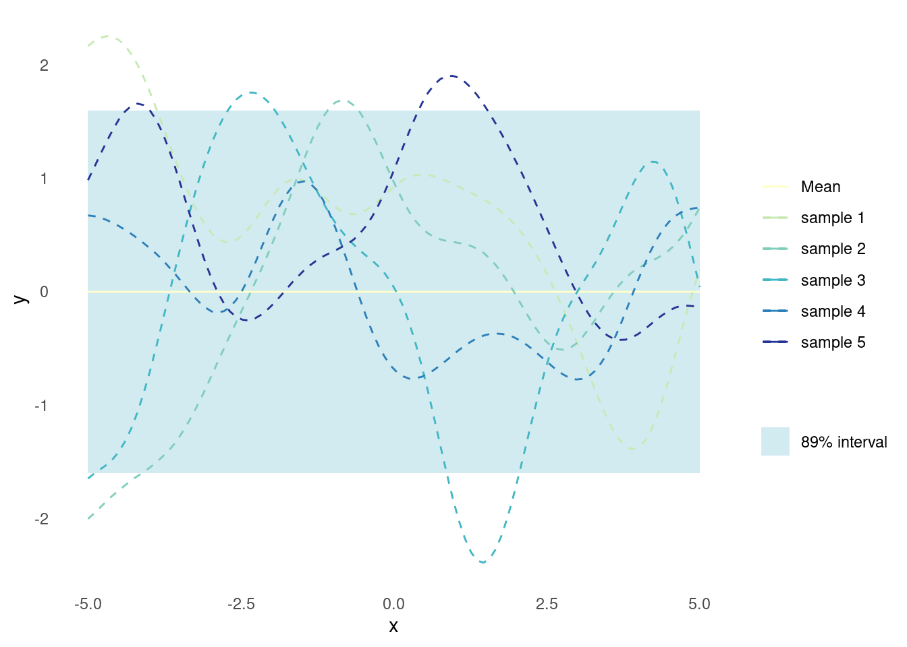
Conditioning the Gaussian process
Until now, the GP has just represented a prior belief for the surrogate functions that might model the objective function. It is not a surrogate model yet.
In order for the GP to be a useful surrogate model, it should provide posterior predictions for proposed points, given the available training data. I.e. for a set of training data, \mathbf{X}_t and \mathbf{y}_t, as well as a set of proposed points \mathbf{X}_p, the GP should yield a posterior predictive distribution for the proposed/predicted outputs \mathbf{y}_p. For a GP, the joint distribution of training points and new proposed points is itself a GP. Consequently, it is possible to compute the joint distribution of training data and posterior prediction points directly.
The mean and covariance of this joint distribution have well defined expressions. Given a set of training data, \mathbf{X}_t, \mathbf{y}_t, and set of points on which to make predictions, \mathbf{X}_p, the mean of the posterior predictive distribution is
\mathbf{\mu}_{p|t} = \mathbf{\mu}_p + \mathbf{\Sigma}_{tp}^T \mathbf{\Sigma}_{tt}^{-1} (\mathbf{y}_t - \mathbf{\mu}_t)
Where \mathbf{\Sigma}_{tp} is the covariance matrix between training and prediction points and \mathbf{\Sigma}_{tt} is the covariance matrix between training points.
Recall though that often \mathbf{\mu} = \mathbf{0}, so the equation will often show up as
\mathbf{\mu}_{p|t} = \mathbf{\Sigma}_{tp} \mathbf{\Sigma}_{tt}^{-1} \mathbf{y}_t
This is also what is implemented below.
The covariance matrix of the posterior predictive distribution is
\mathbf{\Sigma}_{p|t} = \mathbf{\Sigma}_{pp} - \mathbf{\Sigma}_{tp}^T \mathbf{\Sigma}_{tt}^{-1} \mathbf{\Sigma}_{tp}
Where \mathbf{\Sigma}_{pp} is the covariance matrix between prediction points.
These formulas are straightforward linear algebra and could be implemented directly as such. However, they are somewhat numerically unstable. For greater stability, the implementation below calculates the posterior using the algorithm described in chapter 2 of [1].
#' Get Parameters of the Posterior Gaussian Process
#'
#' @param kernel kernel function used for the Gaussian process
#' @param X_pred matrix (m, d) of prediction points
#' @param X_train matrix (n, d) of training points
#' @param y_train column vector (n, d) of training observations
#' @param noise scalar of observation noise
#' @param ... named parameters for the kernel function
#'
#' @return list of mean (mu) and covariance (sigma) for the Gaussian
posterior <- function(kernel, X_pred, X_train, y_train, noise = 1e-8, ...) {
if (is.null(dim(X_pred))) dim(X_pred) <- c(length(X_pred), 1)
if (is.null(dim(X_train))) dim(X_train) <- c(length(X_train), 1)
if (is.null(dim(y_train))) dim(y_train) <- c(length(y_train), 1)
K <- kernel(X_train, X_train, ...) + noise**2 * diag(dim(X_train)[[1]])
K_s <- kernel(X_train, X_pred, ...)
K_ss <- kernel(X_pred, X_pred, ...) + 1e-8 * diag(dim(X_pred)[[1]])
K_inv <- solve(K)
mu <- (t(K_s) %*% K_inv) %*% y_train
sigma <- K_ss - (t(K_s) %*% K_inv) %*% K_s
list(mu = mu, sigma = sigma)
}With a way to calculate the posterior, it is possible to condition a Gaussian process on some training data.
Here is a bit of of training data for a one dimensional example.
X_train <- matrix(c(-4.33, -2.1, 2.1), 3, 1)
y_train <- ackley(X_train)The Gaussian process is then conditioned on training data and applied to new proposed points in a single step
X_predict <- matrix(seq(-5, 5, length.out = 100), 100, 1)
post <- posterior(rbf_kernel, X_predict, X_train, y_train)Just like the prior distribution, it is possible to sample random functions from the posterior distribution
mu <- c(post$mu)
sigma <- post$sigma
n_samples <- 3
samples <- rmvnorm(n = n_samples, mu, sigma)
gpr_plot(samples, mu, sigma, X_predict, X_train, y_train, ackley)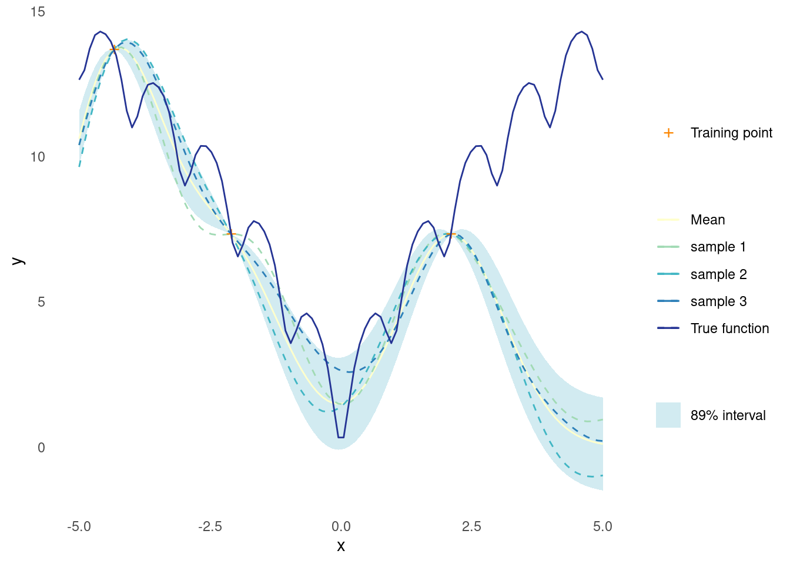
At this point, the fit is not too great and the sampled functions look nothing like the true function. However, this is only based on three data points and an arbitrary choice of kernel parameters.
Both things will be handled in due time, but it gets worse before it gets better.
A Quick Note on Noise
Recall that training data might be noisy, i.e. y = f(\mathbf{x}) + \epsilon.
Noise, too, is a subject all on its own. The key thing to remember is that noise can be accounted for by adding it to the diagonal of \mathbf{\Sigma}_{tt}. This is already implemented in the function for the posterior above.
The effect of noisy training data on the posterior is, unsurprisingly, more uncertainty.
Here a bit of known noise is added to the observations.
noise <- 1
y_train <- ackley(X_train) + noise * rnorm(length(X_train))When recreating the plot from above, now using the noisy observations, the most noticeable difference is that the distribution mean no longer passes though each observation.
post <- posterior(rbf_kernel, X_predict, X_train, y_train, noise = noise)
mu <- post$mu
sigma <- post$sigma
n_samples <- 3
samples <- rmvnorm(n = n_samples, mu, sigma)
gpr_plot(samples, mu, sigma, X_predict, X_train, y_train, ackley)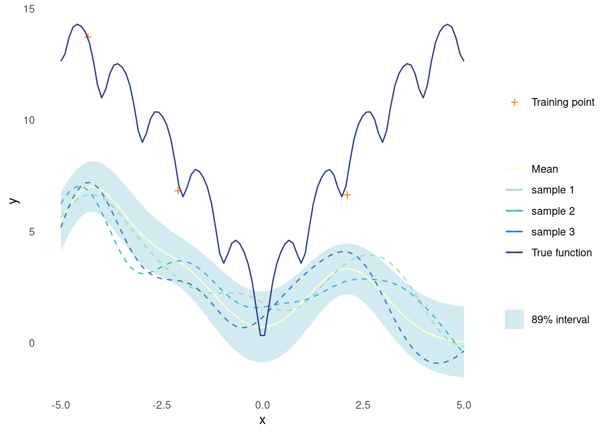
Gaussian Process Regression
Until now, the kernel parameters have been set at fixed, arbitrary values. This is a waste of good parameters, and it is possible to do something better. The core idea of Gaussian process regression (GPR) is that the kernel parameters can be adapted to fit the training data.
A common approach to estimating the parameters of a kernel function in GPR is Maximum Likelihood Estimation (MLE).
The likelihood function for a Gaussian process is given by
p(\mathbf{y}_t \mid \mathbf{X}_t, \theta) = \mathcal{N}(\mathbf{y}_t \mid \mathbf{\mu}, \mathbf{\Sigma}_{tt} + \sigma_{\epsilon}^2 \mathbf{I})
where \mathbf{\Sigma}_{tt} is the covariance matrix computed on training data using some kernel with parameters \theta. In the case of the RBF kernel, the parameters to estimate are \theta = (\sigma_f, l). Notice that the noise has been added to the diagonal of the covariance matrix to account for noisy training data.
The corresponding log likelihood function is
\log p(\mathbf{y}_t \mid \mathbf{X}_t, \theta) = -\frac{1}{2} \left( \log \det (\mathbf{\Sigma}_{tt} + \sigma_{\epsilon}^2 \mathbf{I}) + \mathbf{y}_t^T (\mathbf{\Sigma}_{tt} + \sigma_{\epsilon}^2 \mathbf{I})^{-1} \mathbf{y}_t + n \log(2\pi) \right)
where n is the number of data points.
The optimal values of the kernel parameters are the values that maximise the log likelihood or, equivalently, minimise the negative log likelihood.
To implement Gaussian process regression, two components are needed: the likelihood and an optimiser. Here is an implementation of a negative log likelihood function, for any kernel. The implementation follows Algorithm 2.1 from chapter 2 of [1].
#' Negative log-Likelihood of a Kernel
#'
#' @param kernel kernel function
#' @param X_train matrix (n, d) of training points
#' @param y_train column vector (n, d) of training observations
#' @param noise scalar of observation noise
#'
#' @return function with kernel parameters as input and negative log likelihood
#' as output
nll <- function(kernel, X_train, y_train, noise) {
function(params) {
n <- dim(X_train)[[1]]
K <- rlang::exec(kernel, X1 = X_train, X2 = X_train, !!!params)
L <- chol(K + noise**2 * diag(n))
a <- backsolve(r = L, x = forwardsolve(l = t(L), x = y_train))
0.5*t(y_train)%*%a + sum(log(diag(L))) + 0.5*n*log(2*pi)
}
}There are many ways to minimise the function. Since there are only two parameters for the RBF kernel, the built in optimiser will do just fine.
rbf_nll <- nll(rbf_kernel, X_train, y_train, noise)
opt <- optim(par = c(1, 1), fn = rbf_nll)The optimised kernel parameters should improve the GP.
post <- posterior(
rbf_kernel,
X_predict,
X_train,
y_train,
noise = noise,
l = opt$par[[1]],
sigma_f = opt$par[[2]]
)
mu <- post$mu
sigma <- post$sigma
n_samples <- 3
samples <- rmvnorm(n = n_samples, mu, sigma)
gpr_plot(samples, mu, sigma, X_predict, X_train, y_train, ackley)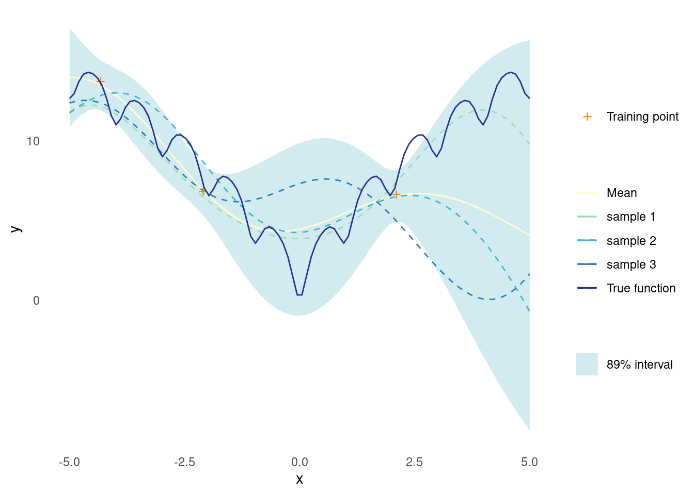
With that, all the components for creating a GP surrogate model are in place. For future use, they are collected in a single function that performs GPR.
#' Gaussian Process Regression
#'
#' @param kernel kernel function
#' @param X_train matrix (n, d) of training points
#' @param y_train column vector (n, d) of training observations
#' @param noise scalar of observation noise
#' @param ... parameters of the kernel function with initial guesses. Due to the
#' optimiser used, all parameters must be given and the order unfortunately
#' matters
#'
#' @return function that takes a matrix of prediction points as input and
#' returns the posterior predictive distribution for the output
gpr <- function(kernel, X_train, y_train, noise = 1e-8, ...) {
kernel_nll <- nll(kernel, X_train, y_train, noise)
param <- list(...)
opt <- optim(par = rep(1, length(param)), fn = kernel_nll)
opt_param <- opt$par
function(X_pred) {
post <- rlang::exec(
posterior,
kernel = kernel,
X_pred = X_pred,
X_train = X_train,
y_train = y_train,
noise = noise,
!!!opt_param
)
list(
mu = post$mu,
sigma = diag(post$sigma),
parameters = set_names(opt_param, names(param))
)
}
}Applying GP in more Dimensions
A GP surrogate model is great for problems with many dimensions and relatively few observations. Here is an example in 2D with just 10 training points.
noise_2d <- 1
X_train_2d <- matrix(runif(20, -5, 5), 10, 2)
y_train_2d <- ackley(X_train_2d) + noise_2d * rnorm(2)
gpr_2d <- gpr(rbf_kernel, X_train_2d, y_train_2d, noise_2d, l = 1, sigma_f = 1)
X_predict_2d <- as.matrix(expand.grid(
seq(-5,5, length.out = 50),
seq(-5,5, length.out = 50)
))
post <- gpr_2d(X_predict_2d)
tibble::as_tibble(X_predict_2d, .name_repair = ~ c("x1", "x2")) %>%
dplyr::mutate(y = post$mu) %>%
ggplot(aes(x = x1, y = x2)) +
geom_contour_filled(aes(z = y), bins = 8) +
geom_point(
data = tibble::as_tibble(X_train_2d, .name_repair = ~ c("x1", "x2"))
) +
theme_minimal() +
labs(fill = "")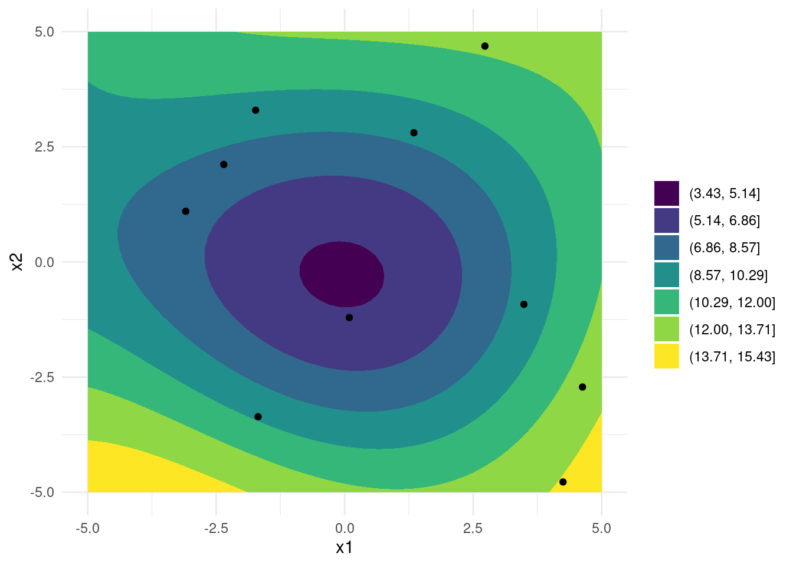
Even with just a few training points, some general tendencies of the objective function have been captured and the surrogate model should be useful for Bayesian optimisation.
Acquisition Function
An acquisition function is used to determine the next point at which to evaluate the objective function. The goal of the acquisition function is to balance exploration, i.e. sampling points in unexplored regions, and exploitation, i.e. sampling points that are likely to be optimal. The acquisition function takes into account the posterior predictive distribution of the surrogate model and provides a quantitative measure of the value of evaluating the objective function at a given point. Some common acquisition functions used in Bayesian optimisation include expected improvement, probability of improvement, and upper confidence bound.
Implementing Expected Improvement
The basic idea behind Expected Improvement (EI) is to search for the point in the search space that has the highest probability of improving the current best solution. EI is defined as the expected value of the improvement over the current best solution, where the improvement is defined as the difference between the function value at the candidate point and the current best value. In other words, EI measures how much better the objective function is expected to be at the candidate point compared to the current best value, weighted by the probability of achieving that improvement.
Formally, the expected improvement acquisition function for a minimisation problem is defined as:
\mathrm{EI}(\mathbf{x}) = \mathbb{E}\left[\max(0, f_{\min} - f(\mathbf{x}))\right]
where \mathbf{x} is the candidate point f_{\min} is the current best function value observed so far.
When using a GP surrogate model in place of f, EI can be calculated using the formula
EI(\mathbf{x}) = (\mu(\mathbf{x}) - y_{best} - \xi) \Phi(Z) + \sigma(\mathbf{x}) \phi(Z) with
Z = \frac{\mu(\mathbf{x}) - y_{best} - \xi}{\sigma(\mathbf{x})}
\mu(\mathbf{x}) and \sigma(\mathbf{x}) are the mean and standard deviation of the Gaussian process at \mathbf{x}. \Phi and \phi are the standard normal cumulative distribution function and probability density function, respectively, and \xi is a trade-off parameter that balances exploration and exploitation. Higher values of \xi leads to more exploration and smaller values to exploitation. EI(\mathbf{x}) = 0 when \sigma(\mathbf{x}) = 0.
The formulas can be implemented directly.
#' Expected Improvement
#'
#' @param gp a conditioned Gaussian process
#' @param X matrix (m, d) of points where EI should be evaluated
#' @param X_train matrix (n, d) of training points
#' @param xi scalar, exploration/exploitation trade off
#'
#' @return EI, vector of length m
expected_improvement <- function(gp, X, X_train, xi = 0.01) {
post_pred <- gp(X)
post_train <- gp(X_train)
min_train <- min(post_train$mu)
sigma <- post_pred$sigma
dim(sigma) <- c(length(post_pred$sigma), 1)
imp <- min_train - post_pred$mu - xi
Z <- imp / sigma
ei <- imp * pnorm(Z) + sigma * dnorm(Z)
ei[sigma == 0.0] <- 0.0
ei
}When there is only a single input dimension, EI can be plotted next to the GP.
ei_plot <- function(mu,
sigma,
X_pred,
X_train,
y_train,
ei,
true_function = NULL,
title = "") {
p1 <- tibble::tibble(
mu = mu,
uncertainty = 1.96*sqrt(sigma),
upper = mu + uncertainty,
lower = mu - uncertainty,
x = X_pred,
f = if (!is.null(true_function)) true_function(X_pred)
) %>%
ggplot(aes(x = x)) +
geom_line(aes(y = mu, colour = "Mean")) +
geom_ribbon(
aes(ymin = lower, ymax = upper),
fill = "#219ebc",
alpha = 0.2
) +
geom_point(
data = tibble::tibble(x = X_train, y = y_train),
aes(x = x, y = y, shape = "Training point"),
colour = "#fb8500",
size = 4
) +
scale_shape_manual(values = c("Training point" = "+")) +
labs(shape = "") +
theme_minimal() +
labs(
y = "y",
x = "",
colour = "",
title = title
) +
theme(panel.grid = element_blank(), axis.text.x = element_blank())
if (!is.null(true_function)) {
p1 <- p1 +
geom_line(mapping = aes(y = f, colour = "True function"))
}
p2 <- tibble::tibble(
x = X_pred,
ei = ei
) %>%
ggplot() +
geom_line(aes(x = x, y = ei, colour = "EI")) +
theme_minimal() +
labs(x = "", y = "Expected improvement", colour = "") +
theme(panel.grid = element_blank())
aligned_plots <- cowplot::align_plots(p2, p1, align = "v")
cowplot::plot_grid(aligned_plots[[2]], aligned_plots[[1]], ncol = 1)
}
mygpr <- gpr(rbf_kernel, X_train, y_train, noise, l = 1, sigma_f = 1)
ei <- expected_improvement(mygpr, X_predict, X_train, xi = 0.1)
post <- mygpr(X_predict)
ei_plot(post$mu, post$sigma, X_predict, X_train, y_train, ei, ackley)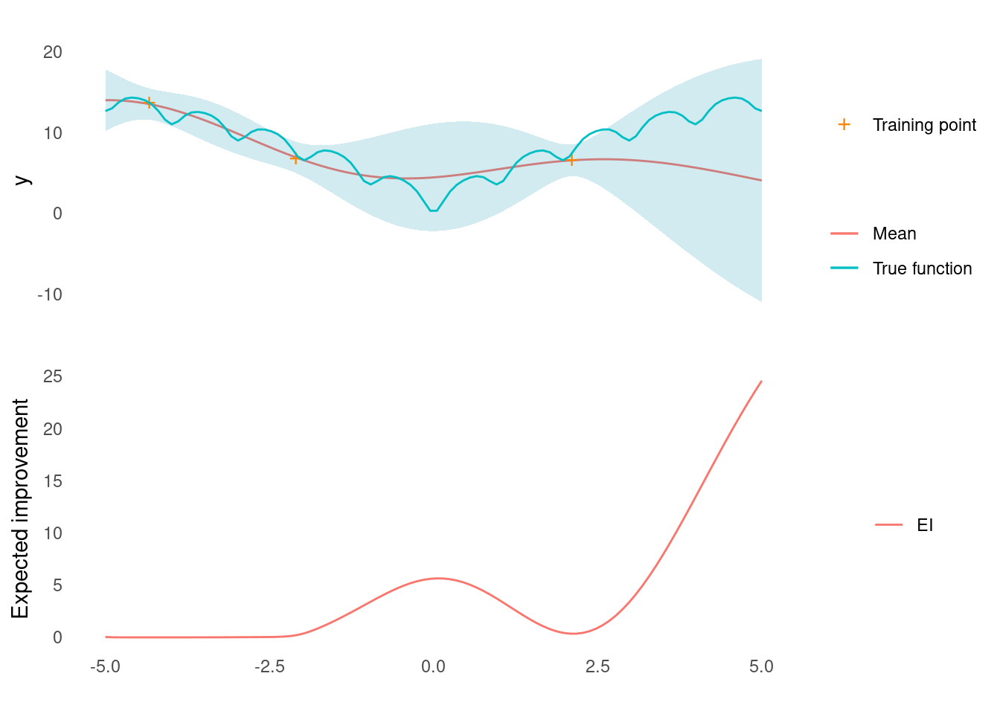
In this example, there is some expected improvement near the middle of the input range, but the point expected to bring about the highest improvement is at the right edge of the range.
Initial Training Data
Before applying GPR and EI, a few initial training data are needed. Considering that it is expensive to evaluate the objective function, the number of initial training observations should be limited. However, considering that the GP is not great for extrapolation, the number of initial observation should not be too small either.
In general, the initial training data should be chosen to provide a good representation of the objective function. This means that the data should be chosen to cover the range of each input dimension. The data should also include inputs that are expected to be both good and bad performers.
There are a few ways to create a set of initial training inputs. One approach is to use a set of random inputs. This is easy to implement, but it risks testing redundant points and it neglects any prior information of the objective function. In place of a completely random design, Latin Hypercube Sampling (LHS) is often used.
Another approach is to use domain knowledge to select an initial set of inputs. For example, if the function being optimised is a manufacturing process there might be a fixed range of feasible settings and skilled operators might have good ideas for which settings would perform well.
For the demonstration of Bayesian optimisation with the Ackley function in just a few dimensions, a few random or linearly spaced points will do fine.
Stopping Criterion
The final component of Bayesian optimisation is a stopping criterion. Depending on the application, a good stopping criterion might be more or less obvious. In settings where a real life process is optimised, time and money are common constraints. In ML or other theoretical applications, a mathematically defined criterion might be preferred.
Examples of stopping criteria include
- Maximum number of objective function evaluations.
- When the improvement in objective function value falls below a threshold.
- Project time limits or deadlines.
- Accuracy of the surrogate model.
Bayesian Optimisation in Action
With all the components of Bayesian optimisation in place, a demonstration is due.
Example in 1D
The initial training data is just two points.
n_initial <- 2
X_initial <- matrix(c(-2.5, 2.1), n_initial, 1)
noise <- 1
y_initial <- ackley(X_initial) + noise * rnorm(n_initial)A GP is conditioned on the initial training data and expected improvement is calculated along a grid.
gp <- gpr(rbf_kernel, X_initial, y_initial, noise, l = 1, sigma_f = 1)
X_predict <- matrix(seq(-5, 5, length.out = 100), 100, 1)
ei <- expected_improvement(gp, X_predict, X_initial, xi = 0.01)Here is what it looks like so far.
post <- gp(X_predict)
ei_plot(post$mu, post$sigma, X_predict, X_initial, y_initial, ei, ackley)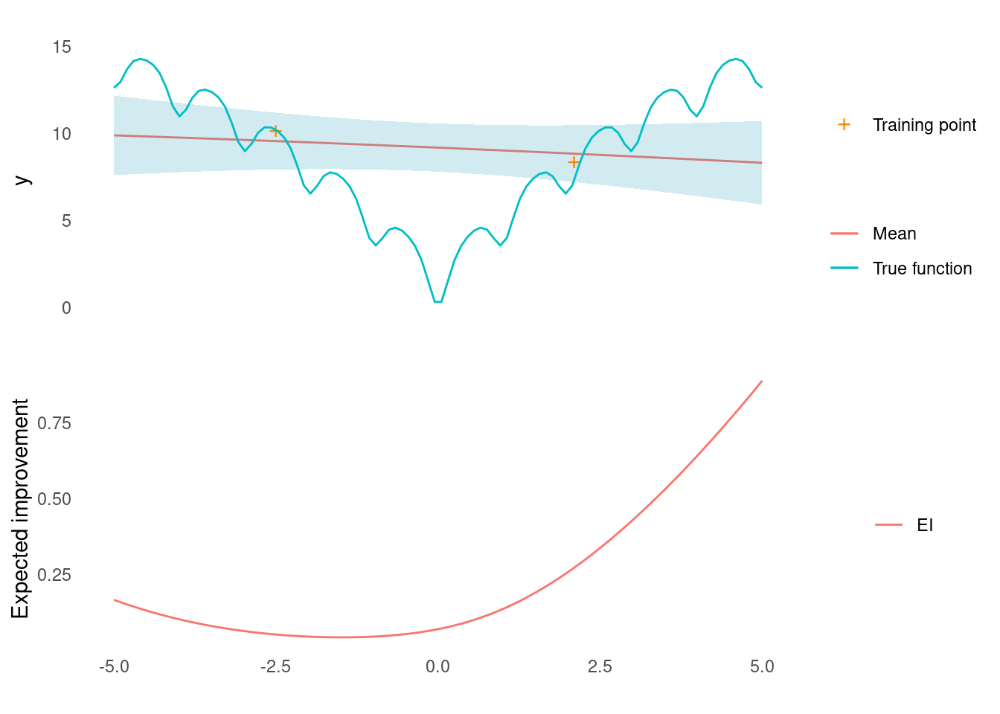
It looks like the point that will yield the most improvement is all the way at the right edge of input space.
Now this point is added to the training data.
x <- X_predict[[which.max(ei)]]
y <- ackley(x) + noise * rnorm(1)
X_train <- rbind(X_initial, matrix(x))
y_train <- c(y_initial, matrix(y))Now it is time for the optimisation part. The stopping criterion will be five additional evaluations.
n_rounds <- 5In each round, the GP is conditioned on the training data, the point that maximises EI is found, and that point is evaluated in the objective function.
plots <- lapply(seq_len(n_rounds), function(i) {
gp <- gpr(rbf_kernel, X_train, y_train, noise, l = 1, sigma_f = 1)
ei <- expected_improvement(gp, X_predict, X_train, xi = 0.01)
post <- gp(X_predict)
p <- ei_plot(
post$mu,
post$sigma,
X_predict,
X_train,
y_train,
ei,
ackley,
title = paste("Round", i)
)
x <- X_predict[[which.max(ei)]]
y <- ackley(x) + noise * rnorm(1)
X_train <<- rbind(X_train, matrix(x))
y_train <<- c(y_train, matrix(y))
p
})A closer look at each iteration reveals that the global optimum was found in the fourth evaluation of the objective function.
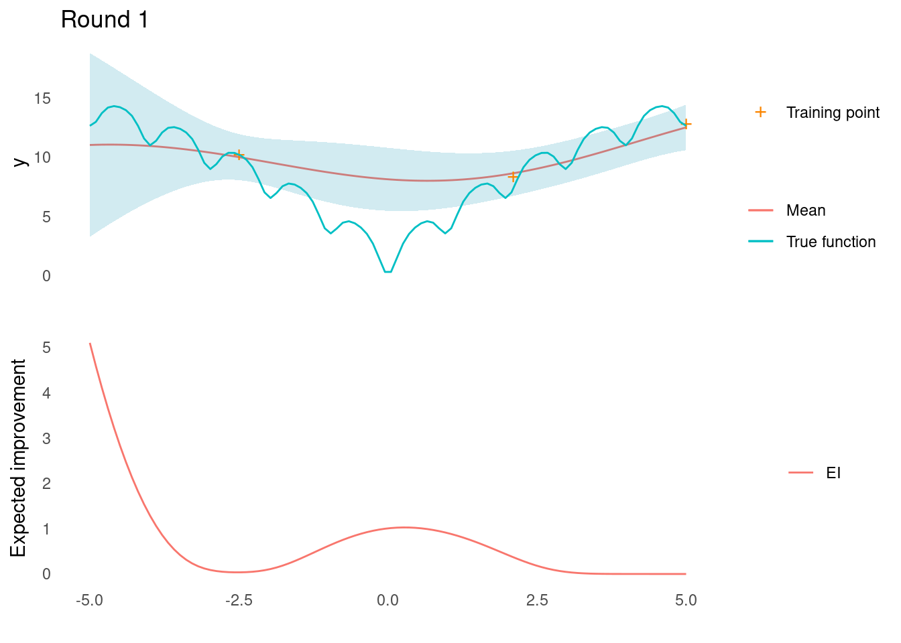
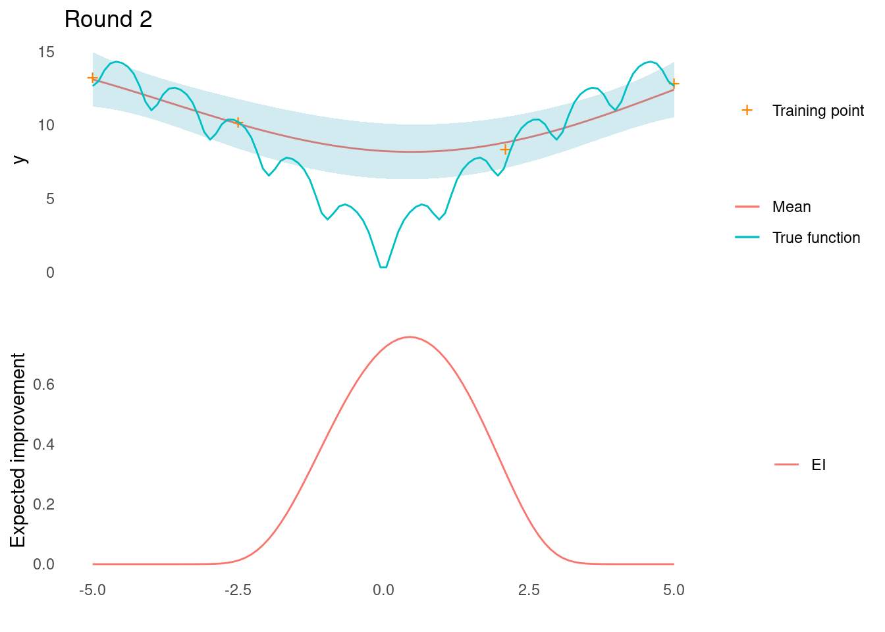
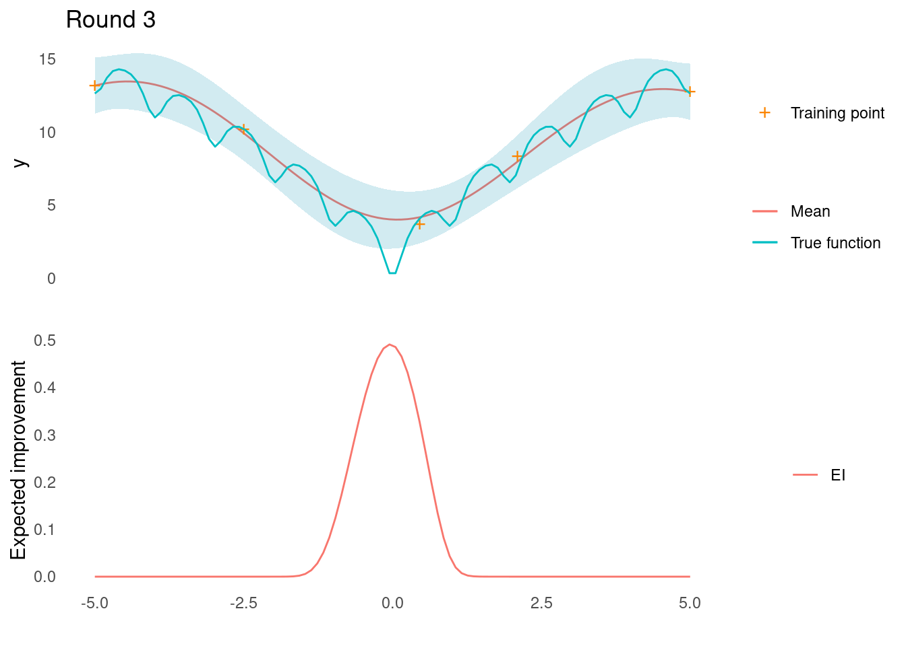
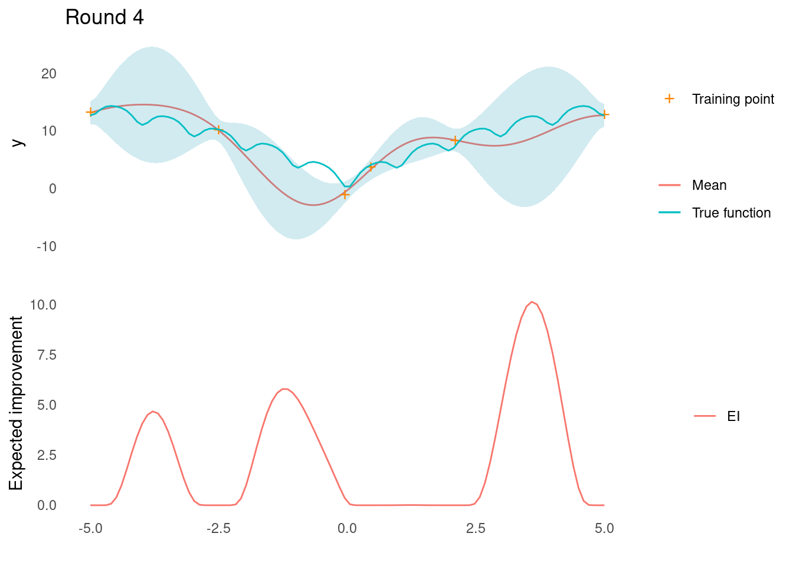
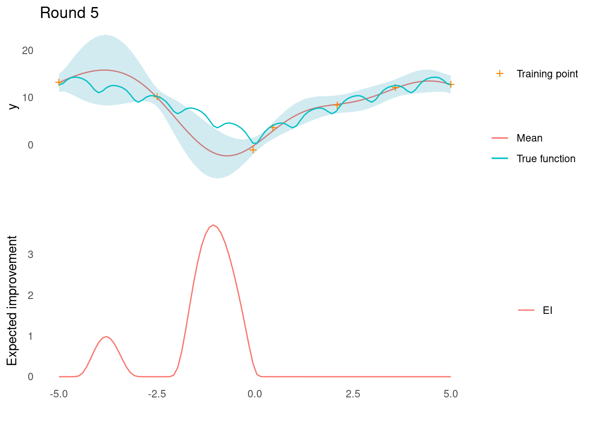
Example in 2D
With two input dimensions the optimisation is a bit harder.
The initial training data will be four points.
n_initial <- 4
X_initial <- c(5, -5, 2.1, -2.1, 4.7, -4.7, -2.5, -2.5) %>%
matrix(n_initial, 2)
noise <- 1
y_initial <- ackley(X_initial) + noise * rnorm(n_initial)A GP is conditioned on the initial training data and expected improvement is calculated along a grid.
gp <- gpr(rbf_kernel, X_initial, y_initial, noise, l = 1, sigma_f = 1)
X_predict <- seq(-5, 5, length.out = 50) %>%
expand.grid(.,.) %>%
as.matrix()
ei <- expected_improvement(gp, X_predict, X_initial, xi = 0.01)Here is what it looks like so far.
post <- gp(X_predict)
tibble::as_tibble(X_predict, .name_repair = ~ c("x1", "x2")) %>%
dplyr::mutate(y = post$mu) %>%
ggplot(aes(x = x1, y = x2)) +
geom_contour_filled(aes(z = y), bins = 8) +
geom_point(
data = tibble::as_tibble(X_initial, .name_repair = ~ c("x1", "x2"))
) +
geom_point(
data = tibble::as_tibble(
t(X_predict[which.max(ei), ]),
.name_repair = ~ c("x1", "x2")
),
mapping = aes(colour = "max EI")
) +
theme_minimal() +
labs(fill = "", colour = "")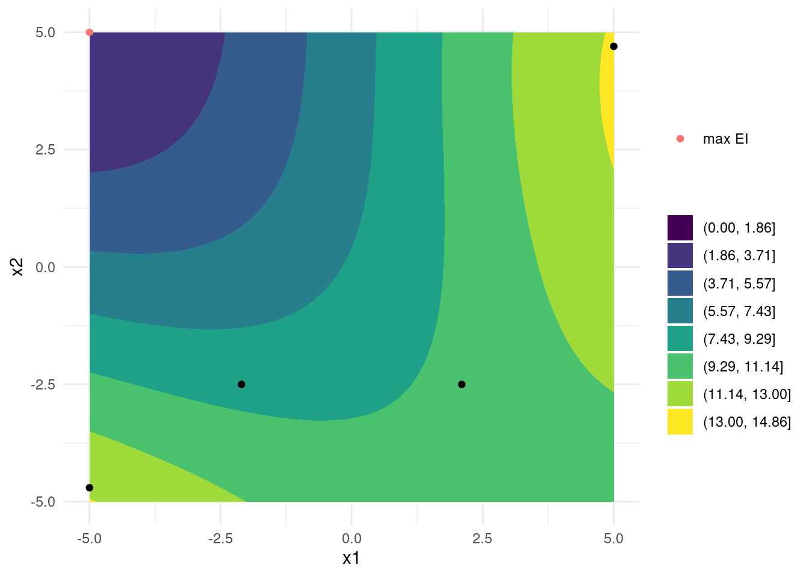
It looks like the point that will yield the most improvement is all the way at the corner of input space.
Now this point is added to the training data.
x <- X_predict[which.max(ei), ]
y <- ackley(x) + noise * rnorm(1)
X_train <- rbind(X_initial, x)
y_train <- c(y_initial, matrix(y))Now it is time for the optimisation part. The stopping criterion will be eigth additional evaluations.
n_rounds <- 8In each round, the GP is conditioned on the training data, the point that maximises EI is found, and that point is evaluated in the objective function.
plots <- lapply(seq_len(n_rounds), function(i) {
gp <- gpr(rbf_kernel, X_train, y_train, noise, l = 1, sigma_f = 1)
ei <- expected_improvement(gp, X_predict, X_train, xi = 0.01)
post <- gp(X_predict)
x <- X_predict[which.max(ei), ]
p <- tibble::as_tibble(X_predict, .name_repair = ~ c("x1", "x2")) %>%
dplyr::mutate(y = post$mu) %>%
ggplot(aes(x = x1, y = x2)) +
geom_contour_filled(aes(z = y), bins = 8) +
geom_point(
data = tibble::as_tibble(X_train, .name_repair = ~ c("x1", "x2"))
) +
geom_point(
data = tibble::as_tibble(t(x), .name_repair = ~ c("x1", "x2")),
mapping = aes(colour = "max EI")
) +
theme_minimal() +
labs(fill = "", colour = "", title = paste("Round", i))
y <- ackley(x) + noise * rnorm(1)
X_train <<- rbind(X_train, x)
y_train <<- c(y_train, matrix(y))
p
})Looking at the last four iterations reveals that, while close, the global optimum has not been found and that many iterations were spent exploring the edges of input space. A few more iterations might have revealed the global optimum. On the other hand, the small budget did reveal a relatively good set of input parameters.
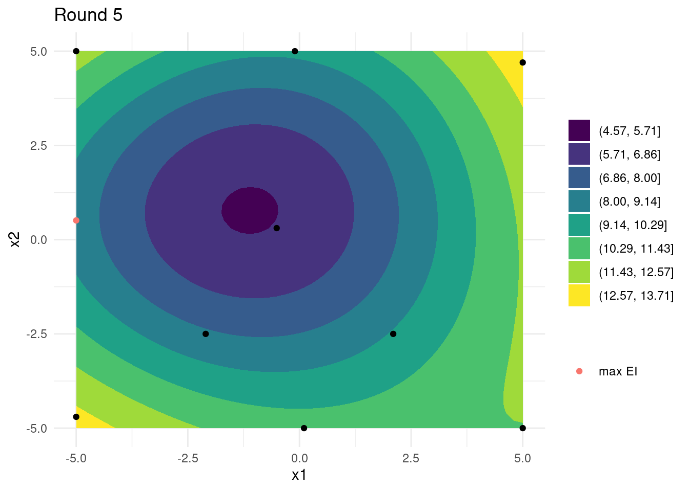
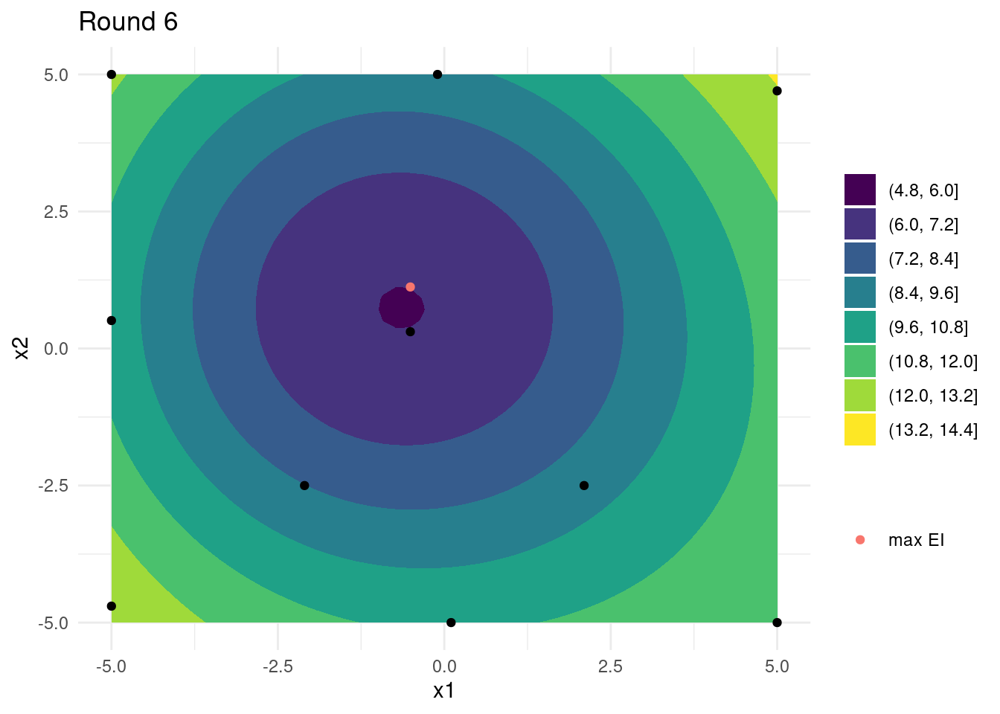
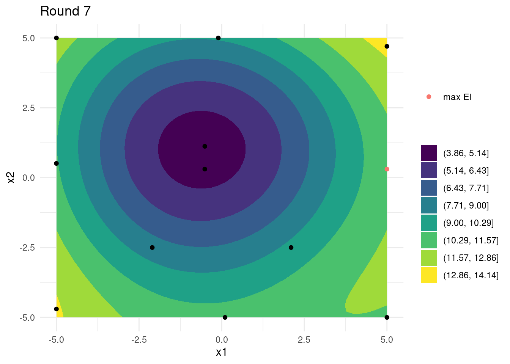
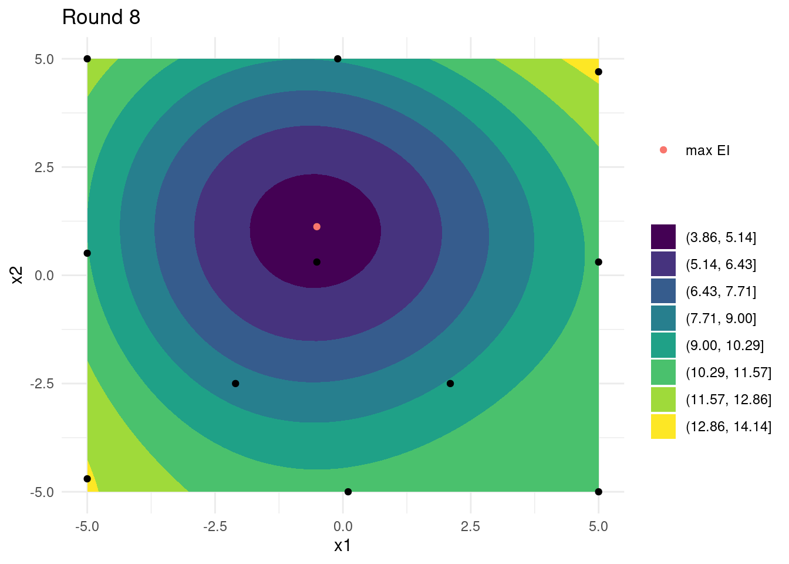
References
License
The content of this project itself is licensed under the Creative Commons Attribution-ShareAlike 4.0 International license, and the underlying code is licensed under the GNU General Public License v3.0 license.
Anders E. Nielsen
Data Professional & Research Scientist
I apply modern data technology to solve real-world problems. My interests include statistics, machine learning, computational biology, and IoT.